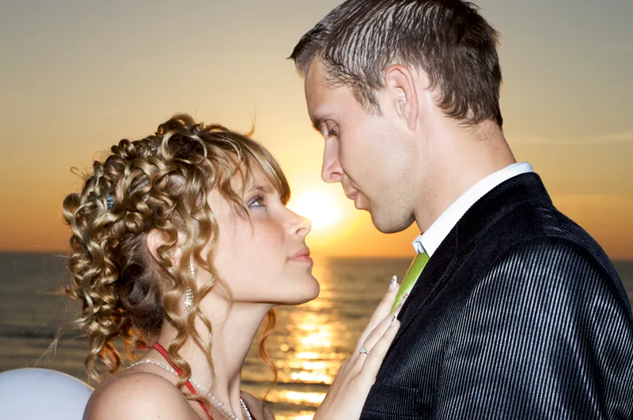
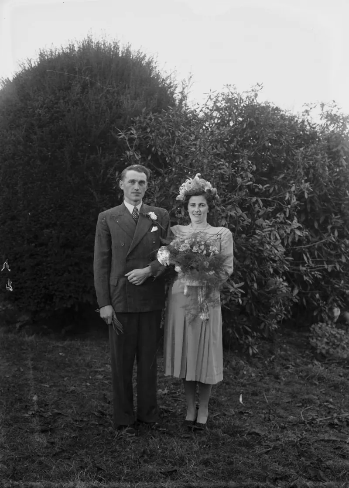
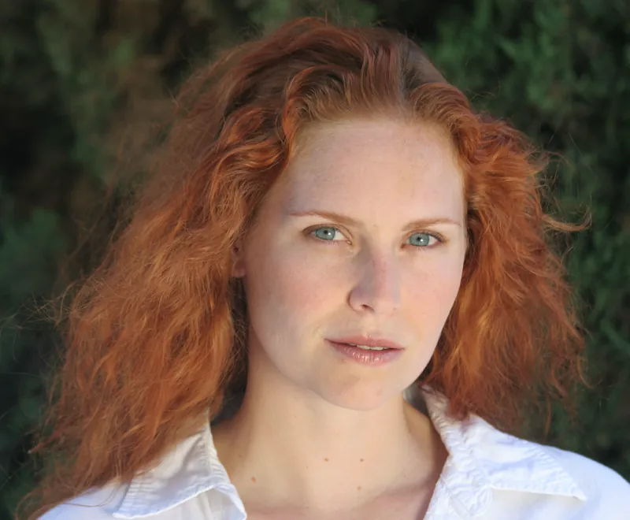
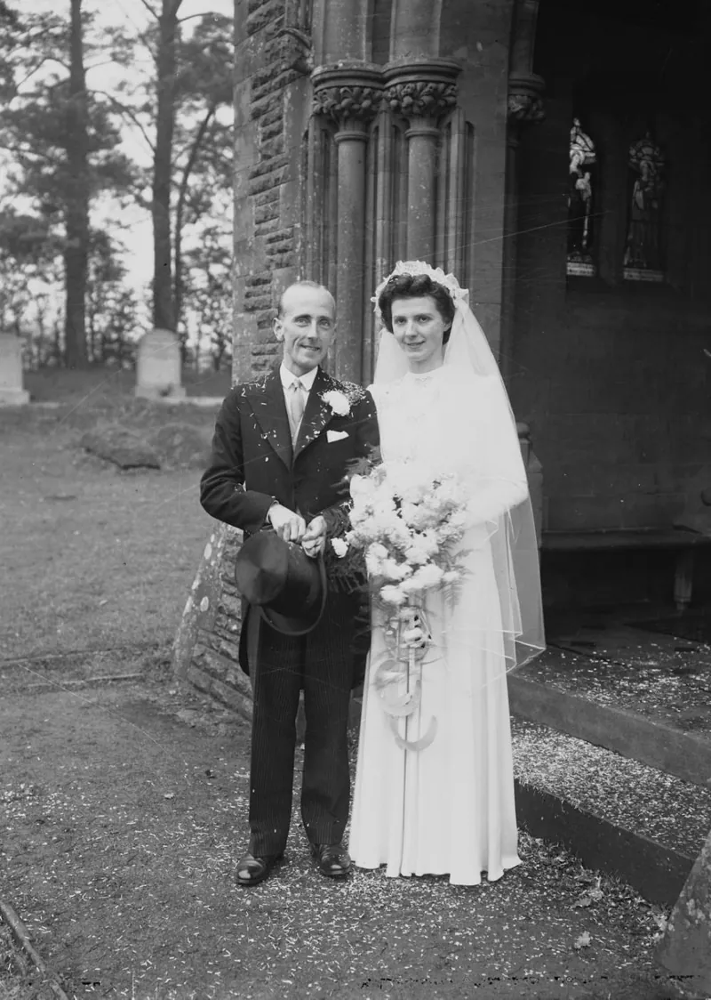

Recent prints
A short run of days. Ask if you want to see more of a particular kind of light.



In the room
Mara photographs weddings and portraits across Sussex and the South East. Days are quiet, unhurried, and built around the light you already have.
This page is a sample layout. The name and contact address are fictional.
Want tech like this working for your business? Solved Tech builds websites, apps and automation for small businesses, at a fixed price agreed before we start. Book a free chat.
Ready to talk dates?
Send a short note with the day, the place, and what you hope to keep.
Enquire by email